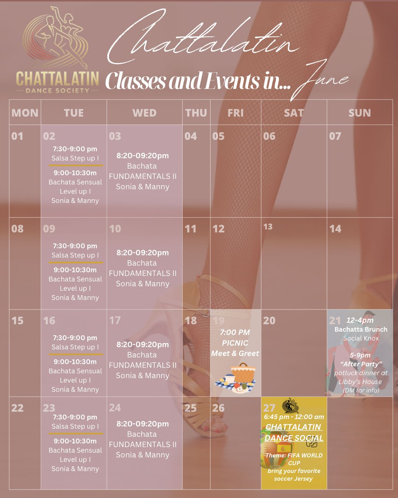

ChattaLatin Salsa & Bachata Event Calendar
Chattanooga, TN
Chattanooga 👀💃
June Calendar

🎉 JUNE WITH ChattaLatin 🎉
We are SO excited for everything happening this month and cannot wait to dance, connect, and celebrate with all of you! 💃🕺
✨ JUNE EVENTS ✨
📍 June 19 — ChattaLatin Meet & Greet Picnic
Join us at Coolidge Park for a fun community hangout starting at 6 PM! Bring your chairs, snacks, drinks, or something to share for our potluck-style picnic. 💃 Come dance, connect, meet new people, or just relax and enjoy the evening with friends.
📌 Exact location will be pinned in the WhatsApp group or DM us for details!
📍 June 21 — Bachata Brunch Social (Knoxville)
We’re headed to Knoxville for brunch and dancing! Then afterward, we’ll be hosting an after party at Libby’s house from 5–9 PM 🎶🍴
➡️ Potluck style — bring a dish, come dance some more, hang out, eat good food, and enjoy time with friends!
📩 DM for more info and address details.
📍 June 27 — ChattaLatin World Cup Dance Social ⚽
🌎 This month’s theme is FIFA World Cup! Wear your favorite soccer jersey and come celebrate cultures from all over the world through dance, music, and community. We cannot wait for this one! 🔥
📚 CLASS REMINDERS 📚
⚠️ Tuesday classes are NOT walk-in friendly. Please make sure to contact Sonia ahead of time if you plan to attend Tuesday classes.
✅ Wednesday classes ARE walk-in friendly — come join us anytime!
We’re so grateful for this growing community and cannot wait to see you all this month ❤️
Want updates on future events, classes, and socials?
📲 Join our WhatsApp group
📸 Follow us on Instagram
📘 Follow us on Facebook
— Your ChattaLatin Team ❤️
June Social